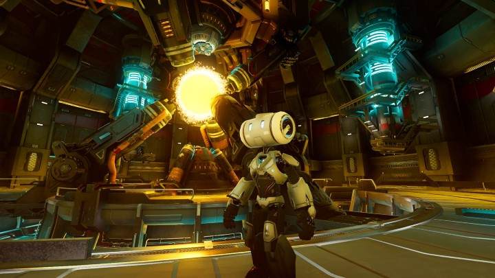

It's time to make that indie C# game in Godot.
 Third Person Shooter Demo by the Godot Engine
You've always dreamed of making that C# game, but engines have always made it too difficult — until now.
Unrest in the indie C# game dev world
For some time, C# has been a popular choice for game developers, originally gaining popularity with Microsoft's XNA framework before being further popularized by tools like Monogame, Unity, and Godot.
Unity, often considered the de facto engine of choice for C# game development, has been in the news a lot lately for laying off a chunk of its workforce, threatening to remove its forums, shedding $5 billion in market cap, and merging with a known adware company, IronSource. Reddit comments are full of loyal Unity users starting to question if Unity has forgotten them, with comments ranging from "maybe I should learn Unreal…" to "this is why you don't go public."
Just to be clear, I don't take pleasure in being critical of Unity, and I think it's a shame all those Unity employees are losing their jobs. At first glance, Unity is so laughably ahead of Godot in sheer number of features supported that it seems comical to compare the two. One is an industry behemoth and the world's most popular game engine, while the other is a free, 30 megabyte program developed by passionate developers in their free time.
Unity can technically do much more than Godot, at least on paper. In practice, Unity requires 3rd party tools for tweens, timers, and networking, all of which Godot includes out-of-the-box. Still, I'd argue that it doesn't actually matter for the vast majority of us indie game developers. The rest of this blog only exists to convince you of that argument.
Do you want to make the world's best-looking game with the latest, buggy technologies, or do you want to actually have fun making games? If you said yes to the last part of that question, I'd like to invite you to try Godot. If you've already tried Godot a while back and gave up, I'd like to ask you to give Godot another chance. It might be better now than you realize.
Unity isn't fun anymore
It's no secret that Unity is painful to use: it's slow to open, and it often pauses to re-scan the entire project while you're trying to work. If you're trying to use source control with a few other people, you have to work even harder to get everything to play nice with Unity's unique file formats. By modern standards, Unity development can feel a bit backwards at times.
When you open Godot, it opens almost instantaneously. The UI is just the right size, and all of the controls are easily accessible in a few simple panes you can rearrange to your liking.
In Godot, everything is composed of nodes. No prefabs, game components, or other abstractions to learn. Just nodes. A scene is just a tree of nodes, saved as a plain text file in a familiar configuration format that you can easily read in a text editor. Need to quickly edit a scene to fix a reference to a file that was renamed or moved outside of Godot? Just open it up in your code editor and fix the path. When you switch back to the Godot editor, it will reload the project before you can blink. There's no difficulty with source control, either: everything just works because everything's text.
Godot also gives you full control of your .csproj file, allowing you to setup dependencies and configure MSBuild as much as you want. Want to use code generators? You can do that. Custom Roslyn analyzers? Go for it. Your own nuget packages? Check.
It's actually fun to use Godot
Godot doesn't fight you when you're building scenes. Making a scene feels a lot like creating a class using composition, and scenes can even inherit from other scenes (using another scene as the the root node of a scene allows you to inherit from it and override its properties in the editor and in code), allowing you to express patterns you're intimately familiar with from object-oriented programming.
Wasn't "having fun" the whole point of making a game in C#, anyways? Using a managed language was supposed to make creating games easier, not harder. Don't worry about all the bits and bytes, C# will take care of it for you. Sadly, we lost that along the way when for-profit game engine companies decided to prioritize the monetization of their tools over the happiness of their users. It isn't that way with Godot: making C# games is fun again.
But what about Unity's asset store?
"Alright, I want to switch to Godot," you say, "but I need those high quality paid assets from the Unity Asset Store since I'm not an artist/musician/expert coder/etc."
Unfortunately, the paid asset store is the biggest sacrifice you'll have to make. While it can't always compare to Unity's paid offerings, the Godot Asset Library offers 1300+ creations for free. Have you seen all of the awesome stuff people have made in Godot?
It's possible that donations or payments will be coming to the Godot Asset Library, allowing creators to be rewarded for their work, but I haven't heard anything conclusive just yet. If it does, expect a lot more high-quality assets in the near future.
Most people would probably agree that being retired with a terrible disease that affects your quality of life is a lot worse than being retired in good health. So why would you keep using a game engine that's making you miserable? Making games is supposed to be fun!
If it's just the Unity Asset Store holding you back, there's probably nothing I can say to convince you to give Godot a chance. But if you're resourceful and don't mind a little extra work, and/or you're willing to port your scripts over and import your 3D models into Godot, you might be pleasantly surprised by what you're missing.
You're the star of the show
Godot prioritizes developer experience. I don't think that's explicitly written in the docs, and I've never heard anyone else say it, but that's how I feel when I use Godot. Sure, it has fewer features than the dominating game engines, but the "few" features it does have are so polished and well thought-out that it's a joy to use. When I use Godot, I feel special. Godot's docs are thorough, well-written, and explanatory. If you're really stuck, you can look through it's source code (I've actually done that a few times and figured things out). Everything just works (generally), right out of the box!
Did you know that killer features like Godot 4's NavigationServer (with local object avoidance) are now available as of 3.5? You can even compute navigation meshes at runtime. The Godot developers prove their commitment to you by back-porting some of the most valuable features that were developed for 4.0. They're doing that because you — the game developer — are the focal point of their universe.
The Godot team is not seeking commercial success. It's the same strategy that worked for Blender: make the best possible program for the people. They couldn't make it any clearer: the Godot team wants you to have a good time making games!
"I'll wait until the next version."
A lot of people are holding out for Godot 4.0. Either they're procrastinating, or they sincerely believe Godot can't do what they want it to do. That might be true for a big team making the next big thing, but for most of us indie devs — really? You can't start work on anything yet just because Godot doesn't have LOD? I have a hard time believing that.
Long-time Unity users probably know the feeling of waking up to find out that a feature they really enjoyed (or relied on) was getting axed because Unity wanted to monetize something differently instead of just making the developers happy.
Chances are, by the time you succeed in pushing the limits of Godot, a new version will have been released that can do even more.
We're not waiting on Godot anymore, and neither should you. It's time for you to be happy.
C# in Godot: where we're at in 2022
C# support in Godot has come a long ways since it was first introduced years ago. Godot allows you to use C# 10, which makes for an incredible developer experience (Unity doesn't even fully support C# 9).
While the C# Godot community is fairly small (about 14% of the approximately 5,000 users who responded to the Godot Community Poll 2022 are using C#), we've been able to create addon managers, test frameworks, serializers, mod loaders, logging, node-based dependency managers, Steam integrations, and so much more.
On Reddit, r/Godot has 90,000+ members. The official discord has well over 45,000. With thousands more joining all the time, you'd be in good company. Tons of games on Steam are released using Godot. On Patreon, Godot is bringing in over $15,000 a month.
C# in Godot
Setting up a complex Godot project with C# can be a bit tricky, especially if you're not familiar with the strange hell that is MSBuild. In spite of it all, the community has helped me accomplish everything I've ever wanted to do.
I've spent a lot of time documenting how to setup C# projects in Godot, especially since a lot of the people wanting to use C# with Godot are fairly new to it. If you want some examples and documentation for how to setup and structure your project, I highly encourage you to check out some of the GitHub repositories for my organization, Chickensoft. Or you can pop into our Discord server and we'll be happy to help!
But what about testing?
If you're a test-driven development occultist (or just enthusiastic about testing), you might be wondering how to write tests for your C# Godot game. For a while, that was very difficult, unless you were using XUnit with Rider (which has its own challenges).
Testing is no longer difficult to setup. There are multiple libraries for writing tests for C# Godot code, including Chickensoft's official test framework, go_dot_test that lets you debug tests from VSCode, collect coverage, and run tests from the command line.
What's missing in the Godot C# ecosystem?
While Godot's C# support is truly incredible, the ecosystem is fairly light on utilities, particularly networking frameworks and deep editor integrations for C#. There's also no single, direct equivalent to tools like Odin for Unity. If you're up for the challenge of being an early adopter and lie awake at night thinking about open source software, you could be the one to create the next big, useful tool for the Godot C# world.
While Godot has incredible, easy-to-use RPC networking support built into the current 3.x versions, it doesn't have the ability to swap out transports to use something like Steamworks or other messaging protocols under the hood, at least from what I understand. That might be coming in 4.0.
Even so, we're currently building our own networking library in C# for Godot, loosely inspired by Mirror and Netcode for GameObjects that circumvents Godot's networking entirely, for those who might want a more custom approach to networking or need to support certain transports. I'll take all the help I can get, too, because I am way out of my depth on this one!
What else should I know about C# in Godot?
Like other engines, Godot marshals types back and forth between its C++ and C# layers. Not all types can convert into one of Godot's types, but it isn't as big of a problem as you might think. For most game logic, you can create classes, records, and structs the way you normally would, and everything will work fine in the C# layer.
If you need to pass a type to a Godot subsystem, or to a node that's using GDScript, you'll want to make sure any custom objects involved are C# classes that extend Godot.Object (or Godot.Reference), since that's the only way Godot can serialize and track values correctly (the c++ layer uses reference counting, not garbage collection). You can also use C#'s events, which are strongly typed, but if you need to interface with node events, you should use Godot's signal system. In general, I tend to prefer vanilla C# features over Godot types to avoid marshaling penalties and to leverage C#'s strong typing. When I need to interface with Godot nodes, GDScript, or anything that expects Godot types, I adopt Godot's way of doing things. So far, that has worked out really well for me, and I think it will for you, too.
What about asynchrony?
Using async and await with C#'s Task can be a bit of a headache with Godot, especially if you don't realize that that most ways of executing an async Task in C# starts a new thread (or recycles one from the task thread pool). In general, I recommend avoiding asynchrony where possible, unless you have a good way of keeping it self-contained and use it only where absolutely necessary, such as for loading systems or in integration tests (where you need to await across frames). If you can't escape asynchrony, you can always use C# events to interface with the rest of your synchronous code to keep things simple.
C# constructors and Godot
Because of the way Godot spins up classes, you should avoid creating values in your Godot Node's constructor and instead initialize values when Godot calls your node's _Ready method. If you try to do it too early, you introduce a lot of instability in your game. Since C# doesn't have a late modifier (Dart) or lazy (Kotlin), you can simply initialize values to null (or null! if you're using null-aware code) and finish initializing your fields in _Ready.
I know that's a little technical, but knowing those few things should save you a few headaches. It certainly would have helped us!
Open source always wins
Godot may not ever be the dominating game engine, but we believe an open source game engine will dominate the field someday, given enough time. Godot prioritizes developers, and when developers win, everyone else eventually wins, too.
So what are you waiting on? It's certainly not Godot. Make that indie C# game you've been dreaming about! We'll always be in Discord to help! Visit Chickensoft on Github!
Join our Discord: https://discord.gg/MjA6HUzzAE